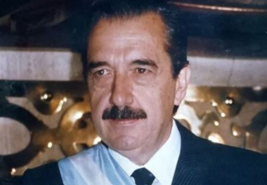
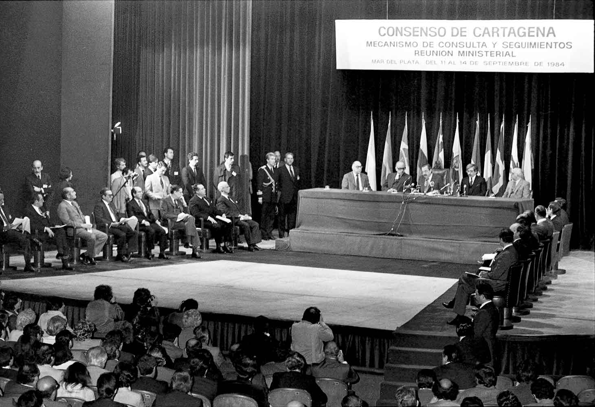
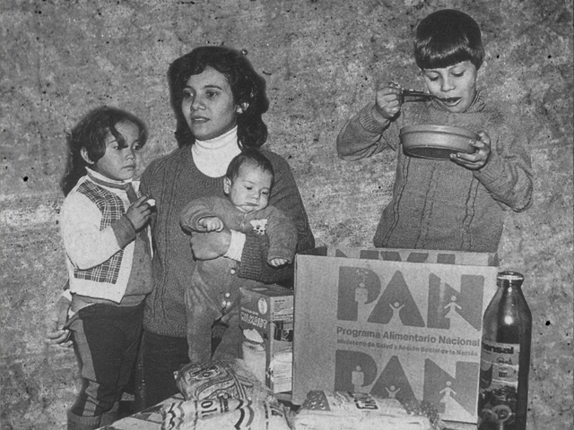
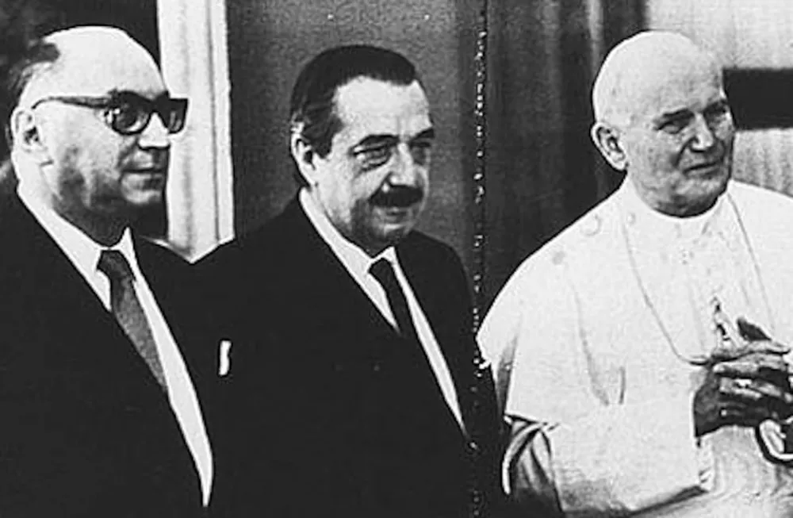
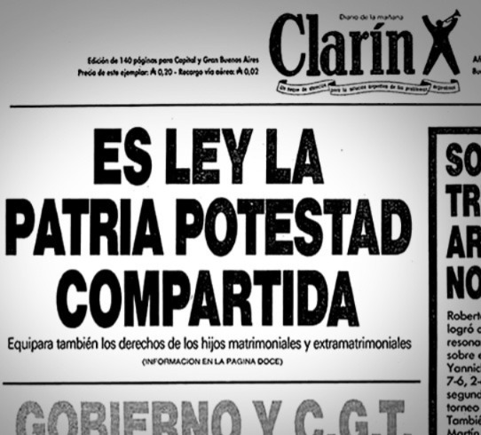
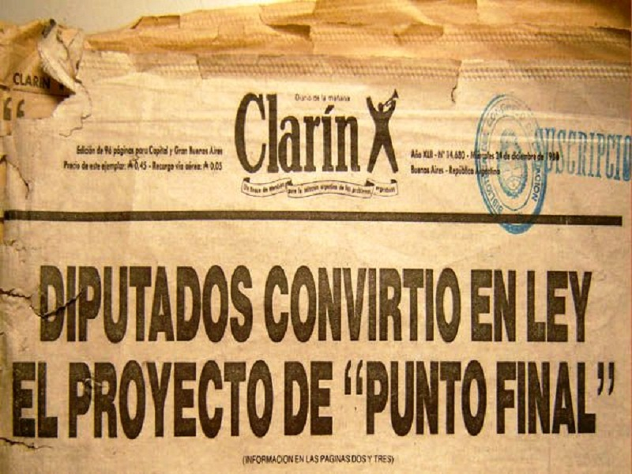
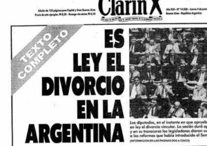
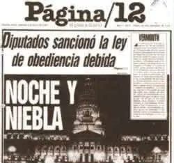
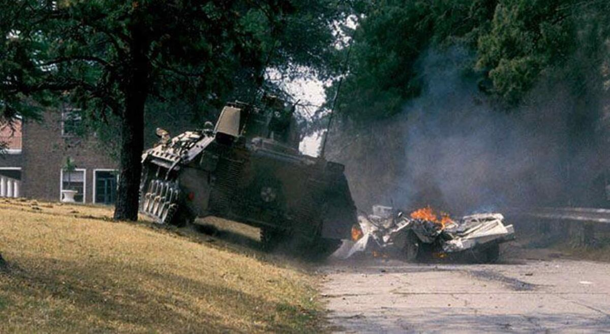
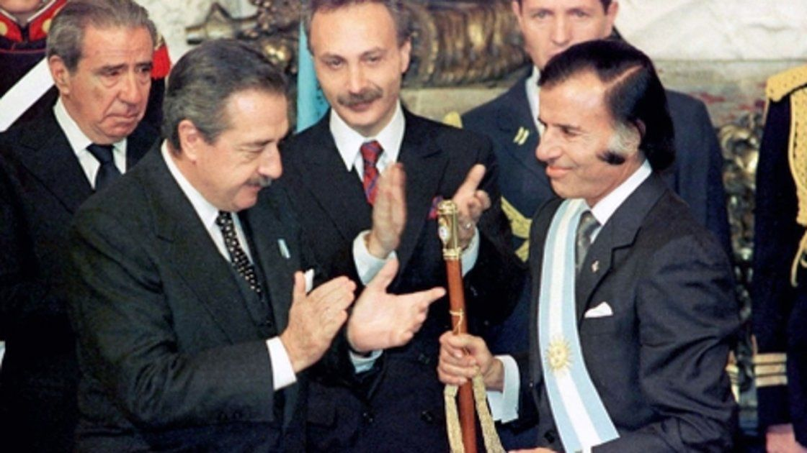

Asume la Presidencia (1983)
Asume el 10 de diciembre de 1983, iniciando el primer gobierno democrático luego de la dictadura militar

Primavera Alfonsinista
Etapa inicial (1983–1985) de gran apoyo social y optimismo tras el retorno de la democracia

Política exterior
Desarrolló una política exterior de apertura internacional, basada en el diálogo
y la cooperación con distintos países del mundo, fortaleciendo el posicionamiento democrático de Argentina

Programa Alimentario Nacional (PAN)
Programa social creado para asistir a sectores vulnerables en un contexto de crisis económica

Tratado con Chile
Se firmó el acuerdo de paz que resolvió el conflicto del Canal de Beagle, evitando una guerra

Patria potestad compartida
Establece igualdad entre madre y padre en la crianza y responsabilidad de los hijos

Ley de Punto Final
Estableció un plazo límite para iniciar juicios contra militares por delitos de la dictadura

Ley de Divorcio
Se legaliza el divorcio vincular en Argentina, ampliando derechos civiles en democracia

Ley de Obediencia Debida
Eximió de responsabilidad a militares de menor rango que actuaron bajo órdenes superiores,
diferenciando entre los responsables directos y quienes solo obedecieron instrucciones durante la dictadura

La Tablada
Ataque armado a un cuartel militar durante el final de su gobierno, en un contexto de tensión política

Fin del mandato (1989)
Termina su presidencia en medio de una fuerte crisis económica e inestabilidad social